As our direct method we will use a multifrontal
approach. In this approach we first determine an order for
choosing pivots based on the sparsity structure of  (called the analysis step), and we then accommodate further
pivoting for numerical stability during the subsequent
numerical factorization phase. The problem when the matrix
is highly indefinite is that the resulting pivot sequence
used in the numerical factorization can differ substantially
from that predicted by the analysis step. In the
multifrontal context, the factorization can be represented
by a tree at each node of which elimination operations are
performed on a partially summed frontal matrix
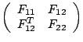 (2)
and pivots at that stage can only
be chosen from within the fully summed block 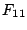. The
problem occurs when it is impossible or numerically suicidal
to eliminate all of resulting in more work and
storage (sometimes dramatically more) than forecast. A
simple way to avoid this problem is to force the elimination
of all of through static pivoting.
(called the analysis step), and we then accommodate further
pivoting for numerical stability during the subsequent
numerical factorization phase. The problem when the matrix
is highly indefinite is that the resulting pivot sequence
used in the numerical factorization can differ substantially
from that predicted by the analysis step. In the
multifrontal context, the factorization can be represented
by a tree at each node of which elimination operations are
performed on a partially summed frontal matrix
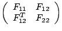 (2)
and pivots at that stage can only
be chosen from within the fully summed block 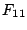. The
problem occurs when it is impossible or numerically suicidal
to eliminate all of resulting in more work and
storage (sometimes dramatically more) than forecast. A
simple way to avoid this problem is to force the elimination
of all of through static pivoting.
We thus
assume that the matrix  has been factorized using the HSL
package MA57 with the option of using static pivoting
[1]. The static pivoting strategy will set the
diagonal entry to 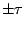 when it is impossible to find a
suitable pivot in the fully summed blocks. It is common to
choose
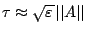
(
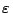 machine precision).
has been factorized using the HSL
package MA57 with the option of using static pivoting
[1]. The static pivoting strategy will set the
diagonal entry to 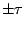 when it is impossible to find a
suitable pivot in the fully summed blocks. It is common to
choose
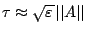
(
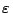 machine precision).
Therefore, the computed factors 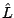 and
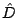 are, in exact arithmetic, the exact factorization
of the perturbed problem
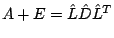 (3),
where the matrix
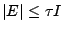 is a diagonal matrix of rank equal to the
number of static pivots used during the factorization. The
nonzero diagonal entries in 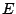 correspond to the positions
at which static pivoting was performed and they are all
equal to  in modulus. Note that if
in modulus. Note that if  is chosen
too small then the factorization could be very unstable
whereas if it is chosen too large, the factorization will be
stable but will not be an accurate factorization of the
original matrix (that is, 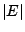 will be large).
is chosen
too small then the factorization could be very unstable
whereas if it is chosen too large, the factorization will be
stable but will not be an accurate factorization of the
original matrix (that is, 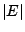 will be large).
Equation (3)
gives a splitting of  in terms of
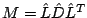 and ,
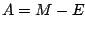,
and the solution of (1) can be expressed as the
solution of the equivalent system
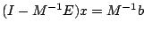 (4).
If the spectral radius of the matrix
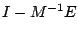
is less than one, the system (4) can be
solved using iterative refinement. This has been used by
many authors, including [1] and is successful
over a wide range of matrices although is somewhat sensitive
to the value of
in terms of
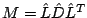 and ,
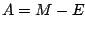,
and the solution of (1) can be expressed as the
solution of the equivalent system
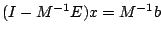 (4).
If the spectral radius of the matrix
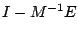
is less than one, the system (4) can be
solved using iterative refinement. This has been used by
many authors, including [1] and is successful
over a wide range of matrices although is somewhat sensitive
to the value of  . If, however, the spectral radius is
greater or equal to one (or ), it is necessary to
switch to a more powerful method like GMRES. Although the
matrix is symmetric, we choose GMRES since it gives us much
more freedom to work with a wide range of preprocessors and
preconditionings.
. If, however, the spectral radius is
greater or equal to one (or ), it is necessary to
switch to a more powerful method like GMRES. Although the
matrix is symmetric, we choose GMRES since it gives us much
more freedom to work with a wide range of preprocessors and
preconditionings.
We have found experimentally that using the factorization (3) as a preconditioning for GMRES works in most cases and is, as expected much more robust than iterative refinement. Indeed GMRES gives normwise backward stability in most cases, which is not the case for iterative refinement. However, there are cases where we do not get convergence to a scaled residual at machine precision.
We have, however, found that restarted GMRES performs better and that using FGMRES, even though our preconditioner remains constant, does even better.
We illustrate this through numerical experiment and then show theoretically that, under reasonable assumptions, FGMRES preconditioned by our static pivoting factorization is backward stable so that a small scaled residual can be achieved. Our analysis also holds for the case of restarted FGMRES that we advocate as a measure to control the memory requirement while still achieving the desired accuracy. Indeed we give theoretical arguments why the restarting often greatly improves the convergence.
[1] I. S. Duff and S. Pralet, Towards a stable static pivoting strategy for the sequential and parallel solution of sparse symmetric indefinite systems, Technical Report TR/PA/05/26, CERFACS, Toulouse, France, 2005. (Also available as RAL Report RAL-TR-2005-007 and IRIT Report RT/TLSE/05/04.)